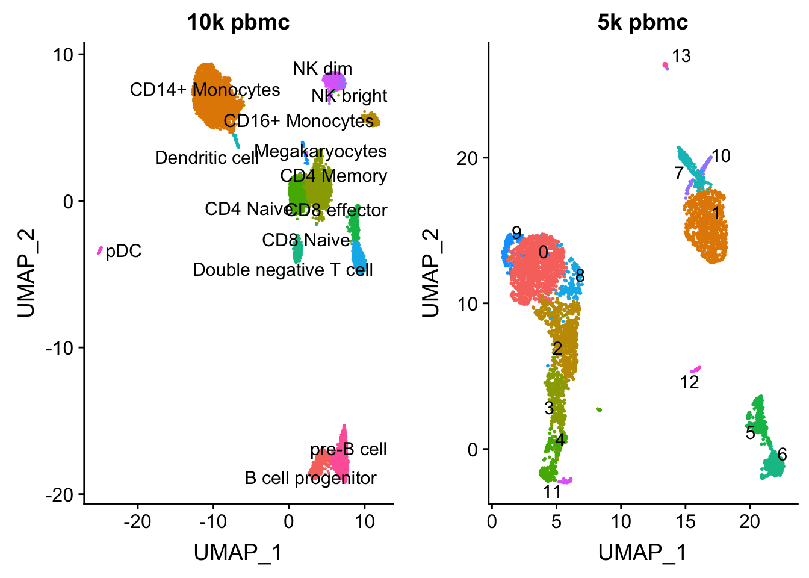
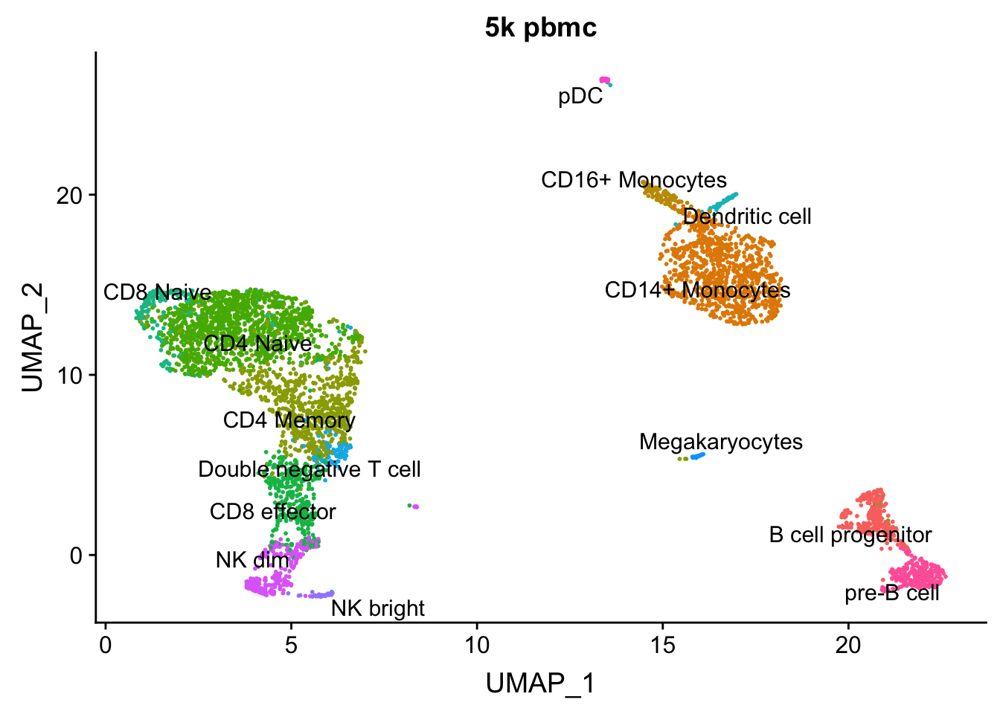

Last updated: 2019-07-23
Checks: 7 0
Knit directory: scRNA-seq-workshop-Fall-2019/
This reproducible R Markdown analysis was created with workflowr (version 1.4.0). The Checks tab describes the reproducibility checks that were applied when the results were created. The Past versions tab lists the development history.
Great! Since the R Markdown file has been committed to the Git repository, you know the exact version of the code that produced these results.
Great job! The global environment was empty. Objects defined in the global environment can affect the analysis in your R Markdown file in unknown ways. For reproduciblity it’s best to always run the code in an empty environment.
The command set.seed(20190718) was run prior to running the code in the R Markdown file. Setting a seed ensures that any results that rely on randomness, e.g. subsampling or permutations, are reproducible.
Great job! Recording the operating system, R version, and package versions is critical for reproducibility.
Nice! There were no cached chunks for this analysis, so you can be confident that you successfully produced the results during this run.
Great job! Using relative paths to the files within your workflowr project makes it easier to run your code on other machines.
Great! You are using Git for version control. Tracking code development and connecting the code version to the results is critical for reproducibility. The version displayed above was the version of the Git repository at the time these results were generated.
Note that you need to be careful to ensure that all relevant files for the analysis have been committed to Git prior to generating the results (you can use wflow_publish or wflow_git_commit). workflowr only checks the R Markdown file, but you know if there are other scripts or data files that it depends on. Below is the status of the Git repository when the results were generated:
Ignored files:
Ignored: .Rhistory
Ignored: .Rproj.user/
Untracked files:
Untracked: data/pbmc10k/
Untracked: data/pbmc5k/
Unstaged changes:
Modified: analysis/about.Rmd
Modified: analysis/index.Rmd
Modified: analysis/license.Rmd
Modified: analysis/scRNAseq_workshop_1.Rmd
Note that any generated files, e.g. HTML, png, CSS, etc., are not included in this status report because it is ok for generated content to have uncommitted changes.
These are the previous versions of the R Markdown and HTML files. If you’ve configured a remote Git repository (see ?wflow_git_remote), click on the hyperlinks in the table below to view them.
| File | Version | Author | Date | Message |
|---|---|---|---|---|
| html | 7bf52d9 | Ming Tang | 2019-07-23 | Build site. |
| Rmd | 2095d3e | Ming Tang | 2019-07-23 | Publish the initial files for myproject |
We have gone through a basic Seurat workflow in the last section using 5k PBMC as an example. We have identified some marker genes for each cluster, and how do we assign each cluster a cell type? Usually, cell type assignment requires a lot of expert opinions based on the known biology of the cells being studied. Large single-cell consortiums such as The Human Cell Atalas (HCA) has produced a lot of data sets with a lot of cells for each tissue/organ and has annotated each cell type. A practical problem is that we have our own single-cell experiemnt done and want to know what are the cell types in our own data set when comparing to a reference data set e.g. in HCA?
Seurat V3 provide convinient functions to do that. For more details, read the paper: Comprehensive Integration of Single-Cell Data and tutorial
Their method aims to first identify ‘anchors’ between pairs of datasets. These represent pairwise correspondences between individual cells (one in each dataset), that we hypothesize originate from the same biological state. These ‘anchors’ are then used to harmonize the datasets, or transfer information from one dataset to another.
For this example, we have a 10k PBMC data set (reference data set) which was annotated by the Seurat developing group. Let’s annotate our 5k PMBC data with the reference.
Transfer of cell type labels from a reference dataset onto a new query dataset
cd data
mkdir pbmc10k
cd pbmc10k
curl -Lo pbmc_10k_v3.rds https://www.dropbox.com/s/3f3p5nxrn5b3y4y/pbmc_10k_v3.rds?dl=1
# the size of the data
ls -shlibrary(Seurat)Warning: package 'Seurat' was built under R version 3.5.2library(tidyverse)── Attaching packages ────────────────────────────────────────────────────────────── tidyverse 1.2.1 ──✔ ggplot2 3.1.0 ✔ purrr 0.2.5
✔ tibble 2.0.1 ✔ dplyr 0.8.0.1
✔ tidyr 0.8.2 ✔ stringr 1.3.1
✔ readr 1.3.1 ✔ forcats 0.3.0 Warning: package 'tibble' was built under R version 3.5.2Warning: package 'dplyr' was built under R version 3.5.2── Conflicts ───────────────────────────────────────────────────────────────── tidyverse_conflicts() ──
✖ dplyr::filter() masks stats::filter()
✖ dplyr::lag() masks stats::lag()# this returns a seurat object
pbmc.10k<- readRDS("data/pbmc10k/pbmc_10k_v3.rds")
pbmc.10kAn object of class Seurat
19089 features across 9432 samples within 1 assay
Active assay: RNA (19089 features)
3 dimensional reductions calculated: pca, tsne, umappbmc.10k@meta.data %>% head() orig.ident nCount_RNA nFeature_RNA observed
rna_AAACCCAAGCGCCCAT-1 10x_RNA 2204 1087 0.035812672
rna_AAACCCACAGAGTTGG-1 10x_RNA 5884 1836 0.019227034
rna_AAACCCACAGGTATGG-1 10x_RNA 5530 2216 0.005447865
rna_AAACCCACATAGTCAC-1 10x_RNA 5106 1615 0.014276003
rna_AAACCCACATCCAATG-1 10x_RNA 4572 1800 0.053857351
rna_AAACCCAGTGGCTACC-1 10x_RNA 6702 1965 0.056603774
simulated percent.mito RNA_snn_res.0.4
rna_AAACCCAAGCGCCCAT-1 0.4382022 0.02359347 1
rna_AAACCCACAGAGTTGG-1 0.1017964 0.10757988 0
rna_AAACCCACAGGTATGG-1 0.1392801 0.07848101 5
rna_AAACCCACATAGTCAC-1 0.4949495 0.10830396 3
rna_AAACCCACATCCAATG-1 0.1392801 0.08989501 5
rna_AAACCCAGTGGCTACC-1 0.3554328 0.06326470 1
celltype
rna_AAACCCAAGCGCCCAT-1 CD4 Memory
rna_AAACCCACAGAGTTGG-1 CD14+ Monocytes
rna_AAACCCACAGGTATGG-1 NK dim
rna_AAACCCACATAGTCAC-1 pre-B cell
rna_AAACCCACATCCAATG-1 NK bright
rna_AAACCCAGTGGCTACC-1 CD4 Memory## how many cells for each cell type? 14 cell types
table(pbmc.10k@meta.data$celltype)
B cell progenitor CD14+ Monocytes CD16+ Monocytes
460 2992 328
CD4 Memory CD4 Naive CD8 effector
1596 1047 383
CD8 Naive Dendritic cell Double negative T cell
337 74 592
Megakaryocytes NK bright NK dim
52 109 435
pDC pre-B cell
68 959 # 10k cells
length(colnames(pbmc.10k))[1] 9432p1<- DimPlot(pbmc.10k, group.by = "celltype", label = TRUE, repel = TRUE) + NoLegend() + ggtitle("10k pbmc")pbmc<- readRDS("data/pbmc5k/pbmc_5k_v3.rds")
p2<- DimPlot(pbmc, group.by = "seurat_clusters", label = TRUE, repel = TRUE) + NoLegend() + ggtitle("5k pbmc")
CombinePlots(plots = list(p1, p2))
| Version | Author | Date |
|---|---|---|
| 7bf52d9 | Ming Tang | 2019-07-23 |
Now, we can identify anchors between the two dataset and use these anchors to transfer the celltype labels we learned from the 10K scRNA-seq data to the 5k pmbc cells.
transfer.anchors <- FindTransferAnchors(reference = pbmc.10k, query = pbmc, features = VariableFeatures(object = pbmc.10k),
reference.assay = "RNA", query.assay = "RNA", reduction = "pcaproject")Performing PCA on the provided reference using 3000 features as input.Projecting PCAFinding neighborhoodsFinding anchors Found 7790 anchorsFiltering anchors Retained 5062 anchorsExtracting within-dataset neighborsNote if transferring scRNAseq label to scATACseq data, set reduction = “cca” is recommended
To transfer the cluster ids, we provide a vector of previously annotated cell type labels for the RNA to the refdata parameter. The output will contain a matrix with predictions and confidence scores for each ATAC-seq cell.
celltype.predictions <- TransferData(anchorset = transfer.anchors, refdata = pbmc.10k$celltype,
dims = 1:30)Finding integration vectorsFinding integration vector weightsPredicting cell labelshead(celltype.predictions) predicted.id prediction.score.CD4.Memory
AAACCCAAGCGTATGG CD14+ Monocytes 0.0000000
AAACCCAGTCCTACAA CD14+ Monocytes 0.0000000
AAACGCTAGGGCATGT B cell progenitor 0.0000000
AAACGCTGTAGGTACG CD4 Naive 0.1296114
AAACGCTGTGTCCGGT CD14+ Monocytes 0.0000000
AAACGCTGTGTGATGG NK dim 0.0000000
prediction.score.CD14..Monocytes prediction.score.NK.dim
AAACCCAAGCGTATGG 1 0
AAACCCAGTCCTACAA 1 0
AAACGCTAGGGCATGT 0 0
AAACGCTGTAGGTACG 0 0
AAACGCTGTGTCCGGT 1 0
AAACGCTGTGTGATGG 0 1
prediction.score.pre.B.cell prediction.score.NK.bright
AAACCCAAGCGTATGG 0 0
AAACCCAGTCCTACAA 0 0
AAACGCTAGGGCATGT 0 0
AAACGCTGTAGGTACG 0 0
AAACGCTGTGTCCGGT 0 0
AAACGCTGTGTGATGG 0 0
prediction.score.CD4.Naive prediction.score.CD8.Naive
AAACCCAAGCGTATGG 0.0000000 0.0000000
AAACCCAGTCCTACAA 0.0000000 0.0000000
AAACGCTAGGGCATGT 0.0000000 0.0000000
AAACGCTGTAGGTACG 0.7578112 0.1125774
AAACGCTGTGTCCGGT 0.0000000 0.0000000
AAACGCTGTGTGATGG 0.0000000 0.0000000
prediction.score.pDC
AAACCCAAGCGTATGG 0
AAACCCAGTCCTACAA 0
AAACGCTAGGGCATGT 0
AAACGCTGTAGGTACG 0
AAACGCTGTGTCCGGT 0
AAACGCTGTGTGATGG 0
prediction.score.Double.negative.T.cell
AAACCCAAGCGTATGG 0
AAACCCAGTCCTACAA 0
AAACGCTAGGGCATGT 0
AAACGCTGTAGGTACG 0
AAACGCTGTGTCCGGT 0
AAACGCTGTGTGATGG 0
prediction.score.CD16..Monocytes
AAACCCAAGCGTATGG 0
AAACCCAGTCCTACAA 0
AAACGCTAGGGCATGT 0
AAACGCTGTAGGTACG 0
AAACGCTGTGTCCGGT 0
AAACGCTGTGTGATGG 0
prediction.score.Megakaryocytes
AAACCCAAGCGTATGG 0
AAACCCAGTCCTACAA 0
AAACGCTAGGGCATGT 0
AAACGCTGTAGGTACG 0
AAACGCTGTGTCCGGT 0
AAACGCTGTGTGATGG 0
prediction.score.CD8.effector
AAACCCAAGCGTATGG 0
AAACCCAGTCCTACAA 0
AAACGCTAGGGCATGT 0
AAACGCTGTAGGTACG 0
AAACGCTGTGTCCGGT 0
AAACGCTGTGTGATGG 0
prediction.score.B.cell.progenitor
AAACCCAAGCGTATGG 0
AAACCCAGTCCTACAA 0
AAACGCTAGGGCATGT 1
AAACGCTGTAGGTACG 0
AAACGCTGTGTCCGGT 0
AAACGCTGTGTGATGG 0
prediction.score.Dendritic.cell prediction.score.max
AAACCCAAGCGTATGG 0 1.0000000
AAACCCAGTCCTACAA 0 1.0000000
AAACGCTAGGGCATGT 0 1.0000000
AAACGCTGTAGGTACG 0 0.7578112
AAACGCTGTGTCCGGT 0 1.0000000
AAACGCTGTGTGATGG 0 1.0000000pbmc<- AddMetaData(pbmc, metadata = celltype.predictions)
pbmc@meta.data %>% head() orig.ident nCount_RNA nFeature_RNA percent.mt
AAACCCAAGCGTATGG pbmc5k 13536 3502 10.675236
AAACCCAGTCCTACAA pbmc5k 12667 3380 5.620905
AAACGCTAGGGCATGT pbmc5k 5788 1799 10.608155
AAACGCTGTAGGTACG pbmc5k 13185 2886 7.819492
AAACGCTGTGTCCGGT pbmc5k 15495 3801 7.460471
AAACGCTGTGTGATGG pbmc5k 6148 2347 9.954457
RNA_snn_res.0.5 seurat_clusters predicted.id
AAACCCAAGCGTATGG 1 1 CD14+ Monocytes
AAACCCAGTCCTACAA 1 1 CD14+ Monocytes
AAACGCTAGGGCATGT 5 5 B cell progenitor
AAACGCTGTAGGTACG 0 0 CD4 Naive
AAACGCTGTGTCCGGT 1 1 CD14+ Monocytes
AAACGCTGTGTGATGG 4 4 NK dim
prediction.score.CD4.Memory
AAACCCAAGCGTATGG 0.0000000
AAACCCAGTCCTACAA 0.0000000
AAACGCTAGGGCATGT 0.0000000
AAACGCTGTAGGTACG 0.1296114
AAACGCTGTGTCCGGT 0.0000000
AAACGCTGTGTGATGG 0.0000000
prediction.score.CD14..Monocytes prediction.score.NK.dim
AAACCCAAGCGTATGG 1 0
AAACCCAGTCCTACAA 1 0
AAACGCTAGGGCATGT 0 0
AAACGCTGTAGGTACG 0 0
AAACGCTGTGTCCGGT 1 0
AAACGCTGTGTGATGG 0 1
prediction.score.pre.B.cell prediction.score.NK.bright
AAACCCAAGCGTATGG 0 0
AAACCCAGTCCTACAA 0 0
AAACGCTAGGGCATGT 0 0
AAACGCTGTAGGTACG 0 0
AAACGCTGTGTCCGGT 0 0
AAACGCTGTGTGATGG 0 0
prediction.score.CD4.Naive prediction.score.CD8.Naive
AAACCCAAGCGTATGG 0.0000000 0.0000000
AAACCCAGTCCTACAA 0.0000000 0.0000000
AAACGCTAGGGCATGT 0.0000000 0.0000000
AAACGCTGTAGGTACG 0.7578112 0.1125774
AAACGCTGTGTCCGGT 0.0000000 0.0000000
AAACGCTGTGTGATGG 0.0000000 0.0000000
prediction.score.pDC
AAACCCAAGCGTATGG 0
AAACCCAGTCCTACAA 0
AAACGCTAGGGCATGT 0
AAACGCTGTAGGTACG 0
AAACGCTGTGTCCGGT 0
AAACGCTGTGTGATGG 0
prediction.score.Double.negative.T.cell
AAACCCAAGCGTATGG 0
AAACCCAGTCCTACAA 0
AAACGCTAGGGCATGT 0
AAACGCTGTAGGTACG 0
AAACGCTGTGTCCGGT 0
AAACGCTGTGTGATGG 0
prediction.score.CD16..Monocytes
AAACCCAAGCGTATGG 0
AAACCCAGTCCTACAA 0
AAACGCTAGGGCATGT 0
AAACGCTGTAGGTACG 0
AAACGCTGTGTCCGGT 0
AAACGCTGTGTGATGG 0
prediction.score.Megakaryocytes
AAACCCAAGCGTATGG 0
AAACCCAGTCCTACAA 0
AAACGCTAGGGCATGT 0
AAACGCTGTAGGTACG 0
AAACGCTGTGTCCGGT 0
AAACGCTGTGTGATGG 0
prediction.score.CD8.effector
AAACCCAAGCGTATGG 0
AAACCCAGTCCTACAA 0
AAACGCTAGGGCATGT 0
AAACGCTGTAGGTACG 0
AAACGCTGTGTCCGGT 0
AAACGCTGTGTGATGG 0
prediction.score.B.cell.progenitor
AAACCCAAGCGTATGG 0
AAACCCAGTCCTACAA 0
AAACGCTAGGGCATGT 1
AAACGCTGTAGGTACG 0
AAACGCTGTGTCCGGT 0
AAACGCTGTGTGATGG 0
prediction.score.Dendritic.cell prediction.score.max
AAACCCAAGCGTATGG 0 1.0000000
AAACCCAGTCCTACAA 0 1.0000000
AAACGCTAGGGCATGT 0 1.0000000
AAACGCTGTAGGTACG 0 0.7578112
AAACGCTGTGTCCGGT 0 1.0000000
AAACGCTGTGTGATGG 0 1.0000000DimPlot(pbmc, group.by = "predicted.id", label = TRUE, repel = TRUE) + NoLegend() + ggtitle("5k pbmc")
| Version | Author | Date |
|---|---|---|
| 7bf52d9 | Ming Tang | 2019-07-23 |
sessionInfo()R version 3.5.1 (2018-07-02)
Platform: x86_64-apple-darwin15.6.0 (64-bit)
Running under: macOS High Sierra 10.13.6
Matrix products: default
BLAS: /Library/Frameworks/R.framework/Versions/3.5/Resources/lib/libRblas.0.dylib
LAPACK: /Library/Frameworks/R.framework/Versions/3.5/Resources/lib/libRlapack.dylib
locale:
[1] en_US.UTF-8/en_US.UTF-8/en_US.UTF-8/C/en_US.UTF-8/en_US.UTF-8
attached base packages:
[1] stats graphics grDevices utils datasets methods base
other attached packages:
[1] forcats_0.3.0 stringr_1.3.1 dplyr_0.8.0.1 purrr_0.2.5
[5] readr_1.3.1 tidyr_0.8.2 tibble_2.0.1 ggplot2_3.1.0
[9] tidyverse_1.2.1 Seurat_3.0.2
loaded via a namespace (and not attached):
[1] tsne_0.1-3 nlme_3.1-137 bitops_1.0-6
[4] fs_1.2.6 lubridate_1.7.4 RColorBrewer_1.1-2
[7] httr_1.4.0 rprojroot_1.3-2 sctransform_0.2.0
[10] tools_3.5.1 backports_1.1.3 R6_2.3.0
[13] irlba_2.3.2 KernSmooth_2.23-15 lazyeval_0.2.1
[16] colorspace_1.4-1 withr_2.1.2 npsurv_0.4-0
[19] gridExtra_2.3 tidyselect_0.2.5 compiler_3.5.1
[22] git2r_0.23.0 cli_1.0.1 rvest_0.3.2
[25] xml2_1.2.0 plotly_4.8.0 labeling_0.3
[28] caTools_1.17.1.1 scales_1.0.0 lmtest_0.9-36
[31] ggridges_0.5.1 pbapply_1.3-4 digest_0.6.18
[34] rmarkdown_1.11 R.utils_2.7.0 pkgconfig_2.0.2
[37] htmltools_0.3.6 bibtex_0.4.2 readxl_1.2.0
[40] htmlwidgets_1.3 rlang_0.3.1 rstudioapi_0.8
[43] generics_0.0.2 zoo_1.8-4 jsonlite_1.6
[46] ica_1.0-2 gtools_3.8.1 R.oo_1.22.0
[49] magrittr_1.5 Matrix_1.2-15 Rcpp_1.0.0
[52] munsell_0.5.0 ape_5.2 reticulate_1.10
[55] R.methodsS3_1.7.1 stringi_1.2.4 whisker_0.3-2
[58] yaml_2.2.0 gbRd_0.4-11 MASS_7.3-51.1
[61] gplots_3.0.1 Rtsne_0.15 plyr_1.8.4
[64] grid_3.5.1 parallel_3.5.1 gdata_2.18.0
[67] listenv_0.7.0 ggrepel_0.8.0 crayon_1.3.4
[70] lattice_0.20-38 haven_2.0.0 cowplot_0.9.3
[73] splines_3.5.1 hms_0.4.2 SDMTools_1.1-221
[76] knitr_1.21 pillar_1.3.1 igraph_1.2.2
[79] reshape2_1.4.3 future.apply_1.0.1 codetools_0.2-16
[82] glue_1.3.0 evaluate_0.12 lsei_1.2-0
[85] metap_1.0 modelr_0.1.2 data.table_1.11.8
[88] png_0.1-7 Rdpack_0.10-1 cellranger_1.1.0
[91] gtable_0.2.0 RANN_2.6 future_1.10.0
[94] assertthat_0.2.0 xfun_0.4 rsvd_1.0.0
[97] broom_0.5.1 survival_2.43-3 viridisLite_0.3.0
[100] workflowr_1.4.0 cluster_2.0.7-1 globals_0.12.4
[103] fitdistrplus_1.0-11 ROCR_1.0-7